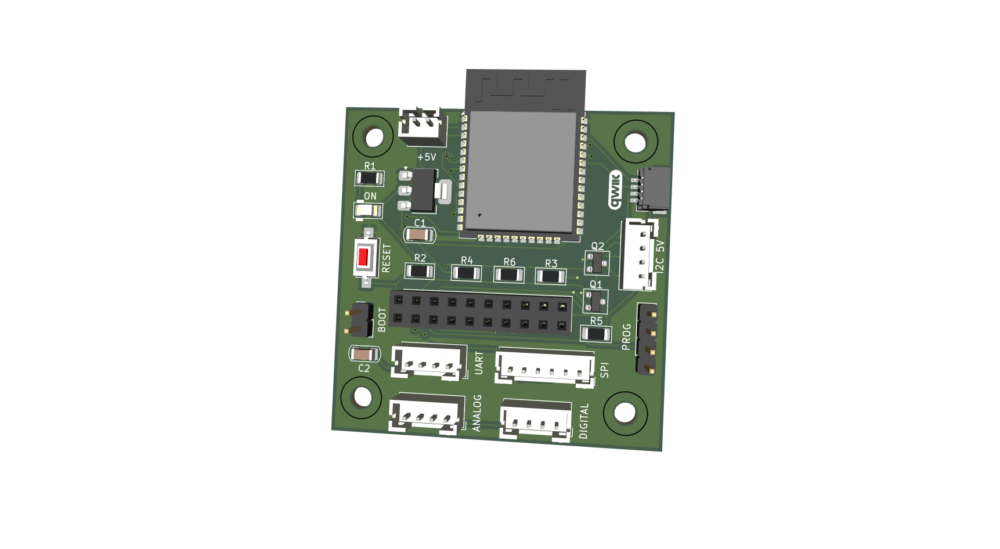
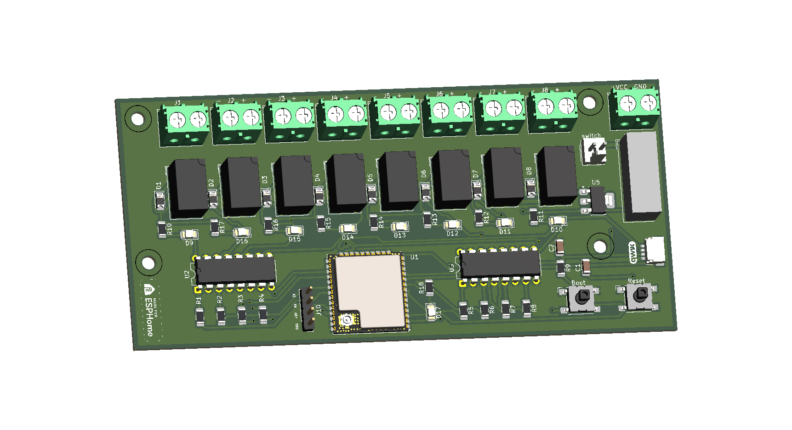
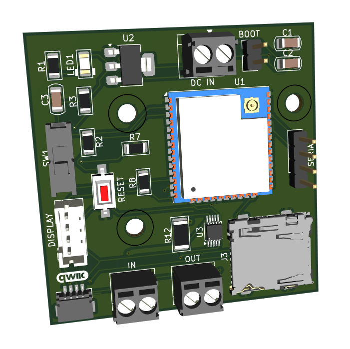

ESP32 · Hardware
ESP32 Multiboard
Placa multipropósito basada en ESP32 para prototipado, integración de sensores, entradas/salidas y automatización técnica.
Ver en GitHub →Portfolio
Una selección inicial de proyectos de The Beaver Dam centrados en ESP32, ESPHome, IoT, monitorización y automatización.

Placa multipropósito basada en ESP32 para prototipado, integración de sensores, entradas/salidas y automatización técnica.
Ver en GitHub →
Sistema de riego con ESP32 para controlar electroválvulas, gestionar zonas y crear una base sólida para integración domótica.
 Ver en GitHub →
Ver en GitHub →

Proyecto de registro de datos con ESPHome para capturar, monitorizar y visualizar información de sensores en instalaciones reales.
Ver en GitHub →